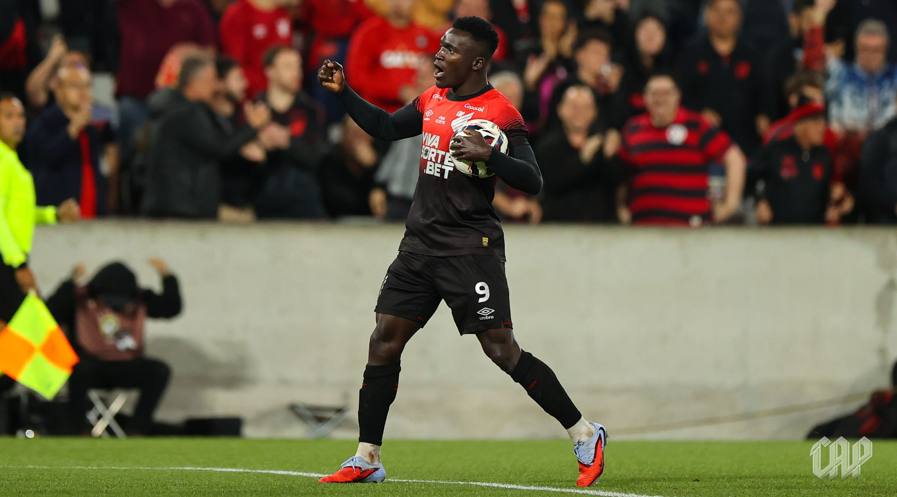
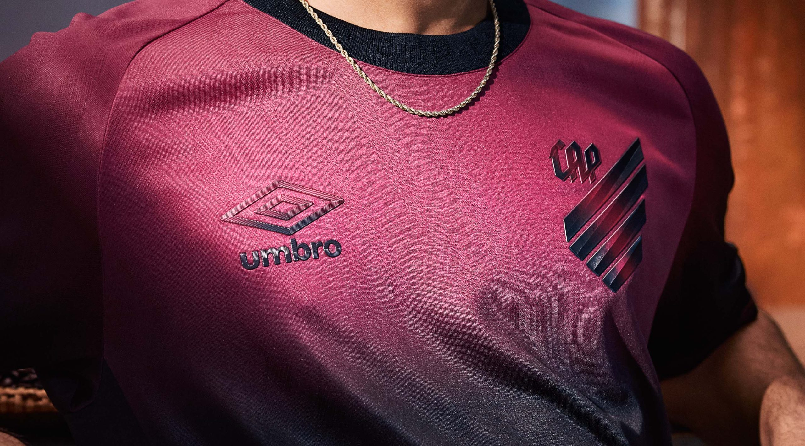
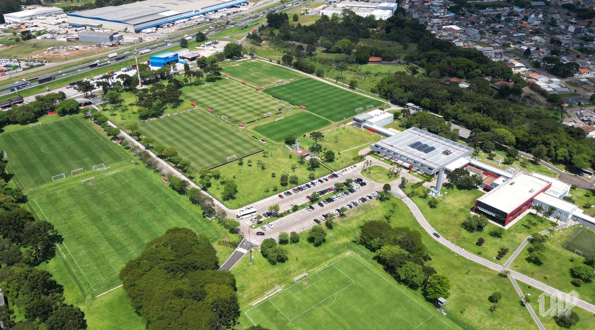
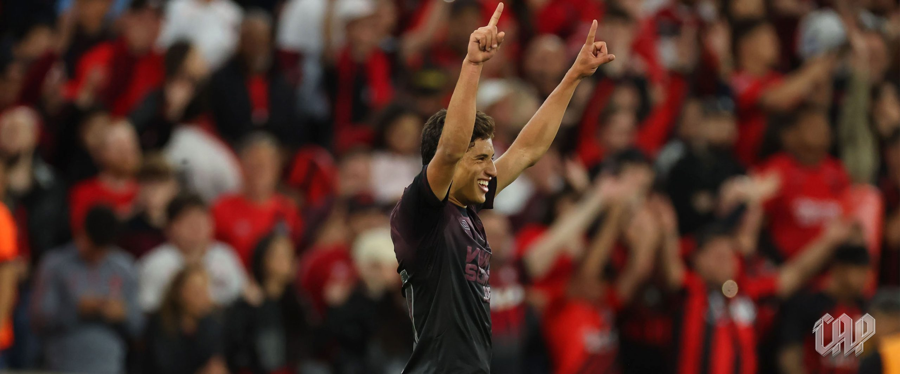

.svg) Últimas Notícias
Últimas Notícias

Últimas Notícias do Furacão
Viveros é escolhido como o Craque Copacol da temporada 2025
A torcida rubro-negra votou pelo Super App Furacão e escolheu: Kevin Viveros é o Craque do Momento Copacol da temporada 2025!
O camisa 9 do Rubro-Negro teve 50,87% dos votos na enquete, que seguiu até o final da última quarta-feira (3).
Os meias Bruno Zapelli e João Cruz completaram o pódio da votação.
OS MAIS VOTADOS: CRAQUE COPACOL DA TEMPORADA 2025
1° Kevin Viveros: 50,87% dos votos
2° Bruno Zapelli: 34,62% dos votos
3° João Cruz: 7,99% dos votos
4° Julimar: 3,46% dos votos
5° Renan Peixoto: 1,07% dos votos
Athletico Paranaense anuncia renovação de contrato com a Umbro e celebra parceria de 28 anos
Nesta sexta-feira (28), Athletico Paranaense e Umbro celebram a renovação de contrato para que a marca inglesa siga como fornecedora de material esportivo do Furacão, ampliando uma das relações mais duradouras e sólidas do futebol brasileiro. A parceria, que já dura há 28 anos, reforça a confiança mútua construída ao longo dos anos e a relevância estratégica da marca no cenário esportivo nacional.
O anúncio da renovação do patrocínio chega em um momento especial para o clube, que retorna à Série A do Campeonato Brasileiro, e marcando uma temporada de muita entrega e superação. E, para valorizar a próxima temporada, Umbro e Athletico estão preparando uma coleção que mescla tradição e modernidade, pilares presentes nas histórias centenárias de ambos.
“A renovação da nossa parceria é um grande exemplo de fornecimento de material esportivo sustentável e rentável. É um orgulho termos um parceiro de tão longa data”, afirma Mauro Holzmann, Diretor de Relações Institucionais do Athletico Paranaense. Para a Umbro, a renovação representa não apenas a manutenção de uma parceria de alto desempenho, mas também um compromisso com um projeto esportivo robusto e promissor.
“Estamos muito felizes em seguir ao lado do Athletico Paranaense, um clube que representa excelência, modernidade e paixão. Construímos uma trajetória conjunta de grandes conquistas, e a renovação consolida nossa confiança em um futuro ainda mais promissor. A Umbro segue comprometida em oferecer tecnologia de ponta, inovação em design e peças desenvolvidas especialmente para atender às necessidades do clube, atletas e torcida”, completa Eduardo Dal Pogetto, diretor da Umbro no Brasil.
Para celebrar a renovação do contrato, a Umbro assumiu o naming rights de um espaço especial da Arena da Baixada. A Zona Mista Umbro foi inaugurada nesta sexta-feira (28). O espaço recebeu nova estrutura para receber a imprensa, além de uma comunicação visual nova e também um espaço de homenagens a atletas históricos. No local, que fará parte do tour da Arena, também estará a cápsula do bicentenário do Furacão.
“Além da renovação desta parceria de extrema importância para o Athletico, recebemos com muito orgulho o patrocínio da Umbro neste espaço tão especial que enaltece a história do clube”, afirma Fernando Volpato, Diretor de Operações do Athletico Paranaense.
A cápsula foi criada para reafirmar o compromisso do Athletico com o futuro. Ela simboliza a crença de que o clube continuará existindo, crescendo e inspirando novas gerações até 2124 e além. Em seu interior estão mais de 100 itens que marcaram a história do Furacão: conquistas, símbolos, memórias e objetos escolhidos pela própria torcida, representando os momentos mais significativos da trajetória recente.
Sobre a Umbro
Fundada em 1924, a Umbro é a autêntica marca do futebol, pois se dedica a este esporte há mais de 100 anos. Nascida em Manchester, Inglaterra, a Umbro tem seus produtos usados dentro e fora de campo em mais de 100 países por todo o mundo. Hoje, a companhia soma sua herança na alfaiataria esportiva com uma moderna visão do futebol para criar roupas, calçados e acessórios que combinam desempenho e estilo.
Temporada 2026: Elenco principal retoma os treinos no CAT Caju no dia 2 de janeiro
O retorno das atividades do elenco principal do Rubro-Negro tem data e horário marcados.
Os jogadores iniciam os treinos para a temporada 2026 no dia 24 de dezembro, em formato online. A reapresentação dos atletas no CAT Caju está marcada para 2 de janeiro. O Campeonato Brasileiro 2026 tem o início previsto para 28 de janeiro.
O Furacão iniciará a disputa do Campeonato Estadual 2026 com uma equipe Sub-23, comandada pela comissão técnica da categoria Sub-20. A estreia na competição está marcada para o dia 8 de janeiro, às 20h30, como visitante, diante do Andraus.
A base do time athleticano na Copa São Paulo de Futebol Júnior será formada por atletas nascidos em 2008. O elenco também contará com jogadores nascidos nos anos 2007 e 2006.
O Furacão voltou!
O Athletico está de volta à elite do futebol brasileiro! O Furacão venceu o América Mineiro por 1 a 0 neste domingo (23), na Arena da Baixada, e confirmou o acesso. João Cruz marcou o gol da vitória rubro-negra. O Athletico terminou o Campeonato Brasileiro da Série B na segunda posição, com 65 pontos.
O Athletico dominou o primeiro tempo. O Furacão foi protagonista de todas as principais chances de gol. A primeira, aos três minutos, saiu dos pés de João Cruz. Ele arriscou e a bola foi pela linha de fundo. Aos 10’, quase gol contra do adversário. O zagueiro tentou cortar e quase mandou contra.
Zapelli quase marcou o gol aos 13 minutos. Ele deu um chutaço e a bola foi na rede pelo lado de fora. O Furacão chegou com perigo com Julimar e Zapelli, aos 25’ e aos 35’. Ambas as oportunidades foram por cima do gol.
Aos 41 minutos, o Athletico abriu o placar! João Cruz dominou bonito na entrada da área, tirou da marcação e finalizou na saída do goleiro!
O Rubro-Negro voltou com a mesma formação para a segunda etapa.
O América até assustou aos 33′, com Rafa Silva. Mas nada pôde atrapalhar a festa dos mais de 42 mil rubro-negros na Arena da Baixada.
Athletico vira sobre a Ferroviária nos acréscimos e fica muito perto do acesso!

O Furacão venceu a Ferroviária por 2x1 fora de casa, com um gol aos 49 minutos do segundo tempo! Veja como foi a partida, os gols da virada e os bastidores dessa noite histórica em Araraquara.
A Ferroviária saiu na frente ainda no primeiro tempo, aproveitando de uma falha do goleiro rubro negro para abrir o placar. Mas o Athletico não se abalou e voltou com tudo para o segundo tempo.
O empate veio com um golaço de falta de João Cruz, que mandou direto pro gol e deixou a torcida rubro-negra em êxtase na Fonte Luminosa.
Nos acréscimos, aos 49 minutos, veio o momento histórico: Renan Peixoto subiu mais alto que a defesa após cruzamento preciso de Leozinho e marcou o gol da virada.
A vitória coloca o Athletico ainda mais próximo do retorno à Série A e reforça o ótimo momento da equipe comandada por Odair Hellmann.